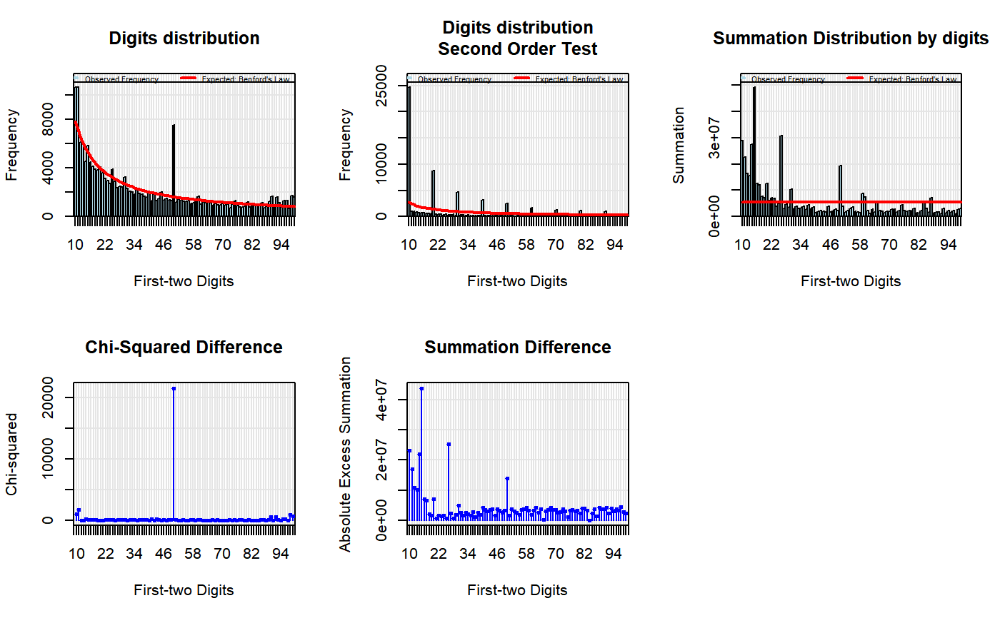

R/main.functions.R
benford.analysis.RdThe Benford Analysis package provides tools that make it easier to validate data using Benford's Law. The main purpose of the package is to identify suspicious data that need further verification.
More information can be found on its help documentation.
The main function is benford. It generates a Benford S3 object.
The package defines S3 methods for plotting and printing Benford type objects.
After running benford you can easily get the "suspicious" data by using the
functions: suspectsTable, getSuspects, duplicatesTable and
getDuplicates. See help documentation and examples for further details.
The package also includes 6 real datasets for illustration purposes.
Alexander, J. (2009). Remarks on the use of Benford's Law. Working Paper, Case Western Reserve University, Department of Mathematics and Cognitive Science.
Berger, A. and Hill, T. (2011). A basic theory of Benford's Law. Probability Surveys, 8, 1-126.
Hill, T. (1995). A statistical derivation of the significant-digit law. Statistical Science, 10(4), 354-363.
Nigrini, M. J. (2012). Benford's Law: Application for Forensic Accounting, Auditing and Fraud Detection. Wiley and Sons: New Jersey.
Nigrini, M. J. (2011). Forensic Analytics: Methods and Techniques for Forensic Accounting Investigations.Wiley and Sons: New Jersey.
data(corporate.payment) #gets data cp <- benford(corporate.payment$Amount, 2, sign="both") #generates benford object cp #prints#> #> Benford object: #> #> Data: corporate.payment$Amount #> Number of observations used = 189347 #> Number of obs. for second order = 65853 #> First digits analysed = 2 #> #> Mantissa: #> #> Statistic Value #> Mean 0.49573 #> Var 0.09191 #> Ex.Kurtosis -1.25840 #> Skewness -0.00035 #> #> #> The 5 largest deviations: #> #> digits absolute.diff #> 1 50 5929.58 #> 2 11 3496.85 #> 3 10 2835.42 #> 4 14 1110.45 #> 5 98 885.15 #> #> Stats: #> #> Pearson's Chi-squared test #> #> data: corporate.payment$Amount #> X-squared = 31890, df = 89, p-value < 2.2e-16 #> #> #> Mantissa Arc Test #> #> data: corporate.payment$Amount #> L2 = 0.0041627, df = 2, p-value < 2.2e-16 #> #> #> Kolmogorov-Smirnov test #> #> data: corporate.payment$Amount #> D = 0.033443, critical value = 0.0031254, alpha = 0.0500000 #> #> Mean Absolute Deviation (MAD): 0.002336108 #> MAD Conformity - Nigrini (2012): Nonconformity #> Distortion Factor: -1.017475 #> #> Remember: Real data will never conform perfectly to Benford's Law. You should not focus on p-values!#> digits absolute.diff #> 1: 50 5929.5833 #> 2: 11 3496.8494 #> 3: 10 2835.4192 #> 4: 14 1110.4465 #> 5: 98 885.1466 #> 6: 99 775.5372 #> 7: 90 729.3459 #> 8: 92 702.9929 #> 9: 25 651.7883 #> 10: 41 649.5985#gets observations of the 2 most suspicious groups suspects <- getSuspects(cp, corporate.payment, how.many=2) duplicatesTable(cp) #prints the duplicates by decreasing order#> number duplicates #> 1: 50.00 6030 #> 2: 1153.35 2279 #> 3: 1083.45 1190 #> 4: 150.00 1116 #> 5: 988.35 1025 #> --- #> 65850: 38.22 1 #> 65851: 5.36 1 #> 65852: 28.49 1 #> 65853: 424.28 1 #> 65854: 108.97 1#gets the observations of the 2 values with most duplicates duplicates <- getDuplicates(cp, corporate.payment,how.many=2) MAD(cp) #gets the Mean Absolute Deviation#> [1] 0.002336108#> #> Pearson's Chi-squared test #> #> data: corporate.payment$Amount #> X-squared = 31890, df = 89, p-value < 2.2e-16 #>#gets observations starting with 50 or 99 digits_50_and_99 <- getDigits(cp, corporate.payment, digits=c(50, 99))